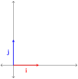
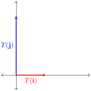

Exploration 6.4.1.
Let us attempt to find a matrix \(M\) for the transformation \(T\) that stretches an image vertically by a factor of 2, as shown in the figure below.
Consider what this transformation does to the standard unit vectors. We observe that \(T(\mathbf{i})=\mathbf{i}\) and \(T(\mathbf{j})=2\mathbf{j}\text{.}\)


This allows us to construct a candidate for the transformation matrix \(M\text{,}\) by making the images of \(\mathbf{i}\) and \(\mathbf{j}\) the columns of \(M\text{.}\) Thus,
\begin{equation*}
M=\begin{bmatrix}
1 \amp 0\\
0 \amp 2
\end{bmatrix}
\end{equation*}
We can now check to see what this matrix does to an arbitrary point \((a, b)\text{.}\) Treating this point as a vector \([a,b]\text{,}\) we compute
\begin{equation*}
M=\begin{bmatrix}
1 \amp 0\\
0 \amp 2
\end{bmatrix}\begin{bmatrix}a\\b\end{bmatrix}=\begin{bmatrix}a\\2b\end{bmatrix}
\end{equation*}
Thus, this transformation takes point \((a, b)\) to point \((a, 2b)\text{.}\) So, the proposed transformation doubles all \(y\)-coordinates resulting in a vertical stretch by a factor of 2.